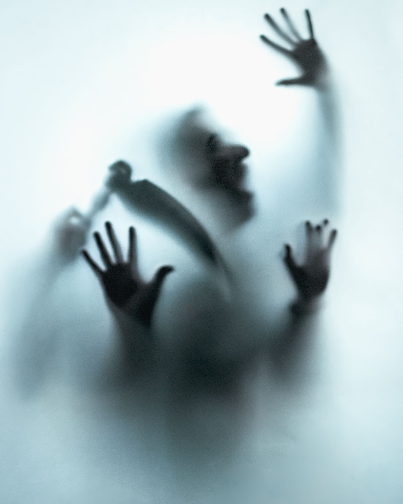
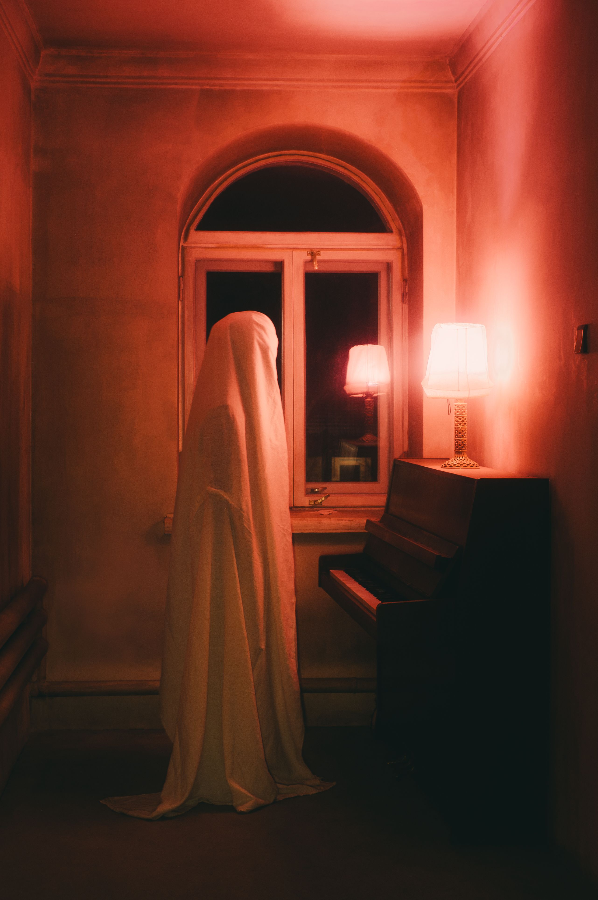
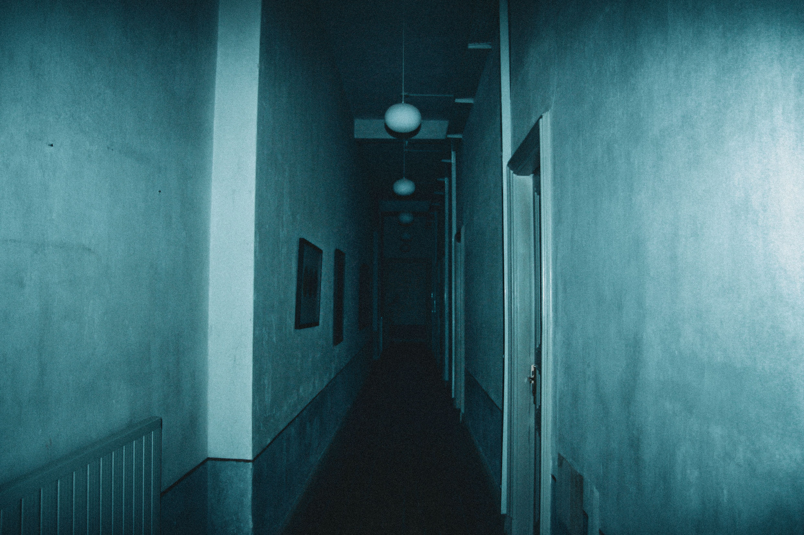

Slasher films center around a relentless killer stalking and eliminating a group of victims one by one, usually using blades or sharp tools.

Supernatural horror relies on ghostly spirits, possessions, demons, and otherworldly phenomena that defy natural laws.
This subgenre aims to unsettle viewers by targeting mental vulnerabilities, paranoia, guilt, emotional instability, and distorted reality.

Presented as raw, discovered video recordings, found footage relies on realistic handheld camera work to create an intimate sense of dread.
